Proprietary to General Electric
Direction 5193575-800, Rev# 5
LightSpeed 7.X Service Information - Adv
Proprietary to General Electric |
Illustration 1: LightSpeed 7.X GOC5 Operator Console (Front Cover Removed)

| Last Revised: | 26 February 2007 |
| NOTE: | The contents of this procedure are equivalent to Direction 5116412-100, Revision 8 only. This procedure does NOT match any other revision of 5116412-100. |
This LFC (Load from Cold) procedure supports systems using version 05MW31.x or later.
| NOTE: | This Procedure applies to the software version 06MW03.4 or later. |
5154896 - LightSpeed Xtream Console Operating System
Version - GEMS Linux 4.3.16
5167837 - LightSpeed VCT Applications Software DVD
Version VCT 06MW03.4
2399297 - Xtream Serial-Over-LAN Service Software
Version - 1.0 Supports: Linux Xtream
5167665 – VCT M4 Class C
| NOTE: | The Xtream Serial-Over-Lan Service Software is not used during the LFC unless instructed via a pop-up message box "SOL Service - ...run the Serial Over LAN Service CD...". This CD is loaded directly into the V/DARC Node. Then press the reset (or cycle power) at the front panel of the V/DARC Node as required. This CD will auto-eject when the SOL load process is complete. |
Verify the SCSI Tower DVD-RAM power is applied.
Verify the SCSI Tower terminator LED is lit (located at the rear).
Verify the Host Computer DVD-ROM drive does not have any media in it.
Verify and record specific system hardware configuration.
Record screen information in VCT Console Information Sheet.
Open a Unix Shell and type the following:
{ctuser@hostname}cat /usr/g/config/INFO<Enter>
Record software version.
Type the following:
{ctuser@hostname} su - <Enter>
{ctuser@hostname} #bigguy <Enter>
{root@hostname} dmidecode | more <Enter>
BIOS Information (Command is available with 05MW31.5X)
Version: JQ.W1.13.US = 1.13 for xw8000
Version: 786B8 v1.11 = 1.11 for xw8200
Record bios version.
Type the following:
{root@hostname} exit <Enter>
{ctuser@hostname} cat /usr/g/config/INFO <Enter>
Record screen information.
Verify the ICOM has the power LED lit. (See illustration, below.)

Some Host Computer xw8200 that were sent with pre-05MW31.5x (A.K.A. M3A ) SW have an incorrect ethernet port cabling configuration. Visually verify that your Host Computer Ethernet Port cables are configured properly.
The chart below illustrates the Host Computer Ethernet naming scheme for the two (2) GOC5 Host Computer Types. Physical cable connections within the Operator Console do not change – only the software Ethernet port naming scheme differs.
| NOTE: | Two (2) Host Computer types used in the GOC5 Operator Console (xw8000 or xw8200). The ifconfig command output is reported differently for each Host type. This occurs because the NIC configuration (NIC 1 vs. NIC2) was changed by the vendor. |
| Host Computer Port Label | xw8000 | xw8200 |
| Physical Port | ifconfig name | ifconfig name |
| A - Hospital Backbone | eth0 | eth2 |
| B - TBL | eth1 | eth3 |
| C VDARC Node | eth2 | eth0 |
| D - Gantry | eth3 | eth1 |
| NOTE: | New tasks are included in this SW release. These tasks will generate data that needs to be saved to the System State DVD. Follow the save and restore procedures throughout this document precisely or valuable information may be lost. |
Insert the System State DVD-RAM into the SCSI Tower DVD RAM drive.
Wait until the DVD drive is ready (i.e., until the front panel green LED is no longer lit).
Select: Service icon to access the CSD (Common Service Desktop)..
Select: [Utilities] .
Select: [System State] .

Select [All] to select all the cals, characterizations, etc.
Select [Save] .
If applicable, select [Yes] when the following message appears: System State Media Status: Please insert a DVD into the drive and press Save again.

| NOTE: | Verify that the "Save" of System State was successful.
If not, correct any errors and re-save the system state. A message
at the end of the Save should state: Save/Restore System
State: Completed Successfully. 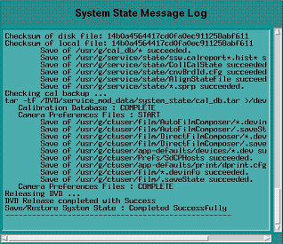 |
When completed, select [CANCEL] .
When completed, select [Dismiss] .
Close the Service Desktop window at the upper left corner of the screen.
Use these procedures to perform a “Load from Cold” (LFC) from a grouping of Software media.
| NOTE: | Before proceeding you must disconnect the console from the Hospital Network. Failure to do this may result in the console broadcasting traffic out to the entire Hospital network. |
Unplug the Hospital Network (HSP) cable from rear Console bulkhead. See illustration below.

Label the cable appropriately and set it aside during LFC.
| NOTE: | System State SAVE must be performed before performing the Load From Cold Procedure. |
Remove the Operator Console's front cover.
Insert the 4.3.16 LightSpeed Xtream Console Operating System DVD (P/N 5154896) into the Host Computer DVD-ROM drive (see the illustration below). The Host Computer must be powered ON to insert the disk.

Select one of the following methods to re-power the Operator Console:
If Applications are up:
Select the [Shut Down] button.

Select [Restart] then [OK] to restart the system.

If Application Software is down, at the toolchest open a Unix Shell and type:
{ctuser@hostname} su -<Enter>
Password: #bigguy <Enter>
[root@hostname] halt
The Operator Console monitor will display a System Halted message when it is acceptable to power OFF the Operator Console.
Power OFF the Operator Console at the front panel switch.

Wait 30 seconds to allow the disk drive to settle; then power ON the Operator Console at the front panel switch.
As the Host Computer restarts, the booting process messages appear. After the booting process completes, the boot: prompt appears. (The OS is a bootable media.)
At the boot: prompt, type one of the following depending on system type:
GEHC2 (for English Keyboard only)
iGEHC2 (International command only)
| NOTE: | The Console Operating System load takes approximately 20 minutes. If the boot: prompt does not appear, then either the DVD is bad or the Console Operating System Media is not installed in the drive. Typing GEHC (or iGEHC) results in both scan and display being on one monitor and requires a LFC. Typing any other command not listed in this procedure will result in a LFC. |
After the OS is loaded on the Host Computer, a red button appears and displays [Reboot] .
Remove the OS DVD from the Host Computer DVD-ROM Drive when it ejects.
Press <Enter> to reboot.
The Host Computer will reboot.
| NOTE: | Do not insert the LightSpeed VCT Applications Software DVD into the Host Computer until the system reboots and the [root@localhost] window appears, displaying the [root@localhost root]# prompt. |
There is a single Application DVD used for both the Host Computer and the VDARC. All applications software will be loaded to the Host Computer during this process.
| FAILURE TO INSTALL THE CORRECT APPLICATION SOFTWARE AND SELECT THE CORRECT SYSTEM DAS HARDWARE CONFIGURATION WILL RESULT IN SYSTEM DOWNTIME AND DCB CIRCUIT BOARD REPLACEMENT. (THIS FAILURE WILL OCCUR AFTER THE FLASH DOWNLOAD PROCEDURE FLASHES THE FIRMWARE.) | |
Verify V/DARC Trouble Shooting cable is not connected to the Scan or Display Monitors at this time.
After the Host Computer reboots, verify that the window appears with the [root@localhost root]# prompt.

Insert the LightSpeed VCT Applications Software DVD (p/n 5167837) into the DVD-ROM drive on the Host Computer. See the illustration below.
After approximately 15 seconds, a pop-up box appears, displaying:

Select [Yes] .
| NOTE: | If the pop-up box Question does not
appear after two minutes, type the following and wait approximately
one minute for the pop-up box to appear. mount /mnt/cdrom<Enter> /mnt/cdrom/autorun<Enter> |
After approximately 15 seconds, an Installation Utility window appears. (See illustration, below.)

Select [LOAD] button. A prompt message appears asking if you want to load the INFO file from the System State DVD.

System State DVD:
If you do not have a System State or the System State is unusable, select [NO] .
If you have a System State DVD, select [YES] . When prompted, ensure the System State DVD is in the DVD drive in the SCSI Tower (on top of the console), and then select [OK] .

Select the [System] tab.
See example System Settings screen, below.

Verify that the Next Patient Exam # on the System Settings screen is the value restored from Save System State. Otherwise, set to 1.
Verify that the proper Time Zone is selected.
Select the [Preferences] tab.
See the illustration below, for an example Preference Settings screen.
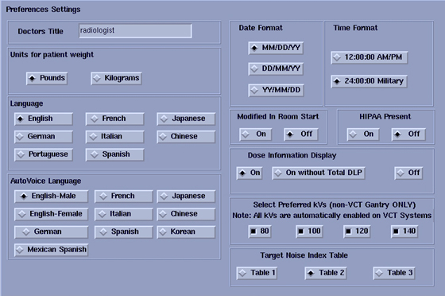
Select the units for Patient Weight.
Select Language: (ENGLISH or OTHER).
Select Preferred FastCal KV - select the kV to be calibrated during FastCal. These kVs should include all kVs that the site uses for patient scanning.
| NOTE: | For VCT, all kV's are automatically enabled. |
Select Target Noise Index Table.
Verify proper Date Format is selected.
Verify proper Time Format is selected.
Verify Modified in Room Start is set to OFF, unless the site is in Japan, and/or the customer has requested that this be turned ON.
Set HIPAA Present to OFF, unless the customer requests HIPPA to be ON.
Select the site preferred Dose Information Display option for the site to use in monitoring calculated Patient Dose:
Select [ON] (full CTDiw Display)
Select [ON WITHOUT TOTAL DLP] (no Dose Length Product Display), or
Select [OFF] (no CTDIw Display)
| NOTE: | A scroll bar below this menu may be present. It contains the System Information from the INFO file System State. |
Select the [Hardware] tab.
See example Hardware Settings screen, below.
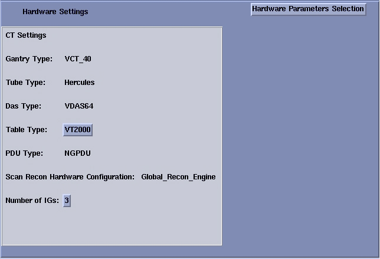
Select the [Hardware Parameters Selections] button. Then, depending on the VCT, site select one of the following:
[VCT64/32 BL]
[VCT32 FL]
See example Select hardware configuration screen, below.
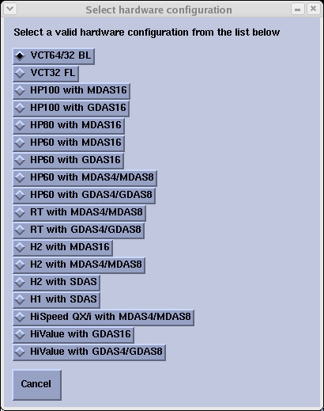
Select the proper Table Type for Hardware.
See example Hardware Settings screen, below.
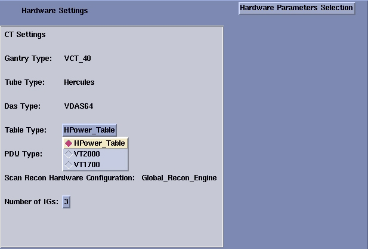
| NOTE: | Check the label/rating plate at the front bottom of the
Table, closest to the Gantry (by the GTCB), and determine the Table
Type according to the part number of the Table:
The HPower_Table select is not valid for VCT Installed Base
|
Select the proper Number of IGs present in the Operator Console.
See example Hardware Settings screen, below.
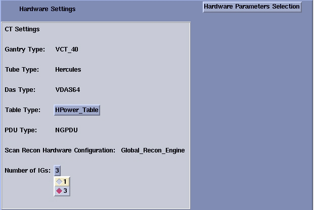
Select the [Network] button.
See example Network Settings screen, below.

Configure Network Settings:
Suite Name - Add your name here.
| NOTE: | The Suite Name must start with a letter, followed by 3 alphanumeric characters Total must be four characters long. The name of the OC interface <Suite Name>_oc within the scanner's subnet. It is suggested that you choose CT01 as its name, unless a different Suite Name is required. |
Host Name - Add your host name here.
| NOTE: | The Host Name identifies the hostname
and AE Title of the scanner. It:
|
IP Address - Site supplied address.
The following procedure should be performed if your customer Ethernet hospital backbone begins with 172.16.0.xx, OR if the scanner will connect to a device with an IP address of 172.16.0.xx.
If hospital backbone starts with 172.16.0.xx and this is a first time install, continue and complete the software load on the HOST and VDARC. When the VDARC applications load is complete the VDARC subnet can be changed by running “reconfig”. During reconfig, check the Change DARC subnet box, and enter the following value: 169.254.0
If the hospital backbone starts with 172.16.0.xx, and the VDARC subnet was already changed, continue and complete the software load on the HOST and VDARC.
If the VDARC subnet was already changed and needs to be set to the 172.16.0 subnet continue and complete the load on HOST and VDARC and run reconfig to change the VDARC subnet.
Net Mask - Site supplied address.
| NOTE: | If the hospital backbone IP address is 192.9.220.xx, then the Net Mask must be set to 255.255.255.252. |
Broadcast Address - Site supplied address.
Default Gateway - Site supplied address.
| NOTE: | Make sure the <NUM LOCK> button on the keyboard is not active. If it is, deselect it to enable the [ACCEPT] button in the next step. Failure to deactivate the NUM LOCK results in load issues. |
If your customer has AW Direct Connect, then select Enable AW DirectConnect?. Complete the LFC, making certain to configure this feature in Section 3.11.3. (Do not configure AW Direct Connect now.)
If your customer wants to synchronize the system time to their NTP server, then select Enable Network Time Protocol, and enter the Primary Server IP address.
Select the [ACCEPT] button at the right corner of the User Interface.
An Install INFO pop-up box is displayed.
See illustration below, for a typical Install INFO message (the Install INFO message is different for each system configuration).
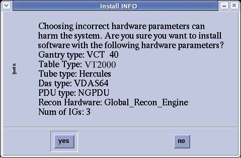
Select [yes] , if correct.
| NOTE: | If the information is not correct, select the [NO] button. This returns you to the Hardware screen. Select the [Hardware Parameters Selection] button and select the correct system configuration from the displayed list. Select the [Accept] button again, followed by the [YES] button on the Install INFO pop-up to accept the new hardware configuration. |
The following pop-up message appears:
Please make sure the CT Application SW is in the drive - the system will be rebooted.
No action is required for this pop-up. The system will automatically reboot after approximately 10 seconds if the [OK] button is not selected.
| NOTE: | Do not remove the LightSpeed VCT Applications Software DVD from the Host Computer until instructed to do so. |
As the system reboots, the following Winterm window message appears: Starting LFW procedure. A shell Installation screen appears and the application software starts loading.

When the system prompts you to reboot (after approximately 13 minutes), answer [YES] . The system is going down for reboot NOW. (See illustration, below.)

| NOTE: | During the reboot of the console, a message may appear to the effect that the system was not able to determine what the tube type was and to run the TIC tool. This message should be ignored. |
After approximately 3 minutes, a pink pop-up box appears, stating CT Software Auto- Start Disabled. In this box, select [OK] .
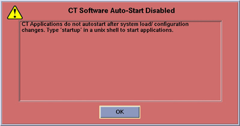
Press the button on the DVD-ROM drive to remove the LightSpeed VCT Applications Software DVD from the Host Computer.
Confirm the Host Computer Software type. Output of the following commands MUST BE EXACT.
Open a Unix Shell and type the following to see software and hardware Config information.
{ctuser@hostname}swhwinfo<Enter>
06MW03.4.<hardware revision info here>
Example for VCT64: 06MW03.4.V40_H_V64_G_GTL
| NOTE: |
|
{ctuser@hostname}swhwinfo –o for OS version
Release: GEHC/CTT Linux 4.3.16
Built: Tue Jul 12 12:29:10 CTD 2005
| NOTE: | Confirm that the results match the Operating System version and Software Build Date shown on the OS and Applications DVDs. |
You must set the date and time on the Host Computer with Application Software down.
Open a Unix Shell and log in as root:
su -<Enter>.
#bigguy<Enter>.
Set date and time. Type the following:
{root@hostname}#setdate<Enter>, to be prompted through the individual entries. Where:
Enter the current Year or "q" to quit (1980-2030) [2006]:
Enter the current Month or "q" to quit (1-12) [04]:
Enter the current Day or "q" to quit (1-30) [14]:
Enter the current Hour (Military Time) or "q" to quit (0-23) [18]: 15
Enter the current Minute or "q" to quit (0-59) [13]: 18
\nUpdating the time on the OC and SBC, Please Wait...
PING darc (172.16.0.2) 56(84) bytes of data.
Upon completing either of the above commands, the user will receive one of the two following responses:
If the V/DARC Node has been replaced and has no software, the following response will appear:
--- darc ping statistics ---
1 packets transmitted, 0 received, 100% packet loss, time 0ms
The darc is not responding. darc will sync time with oc during next darc reboot
Current OC date : Fri Apr 14 15:18:00 CDT 2006
Could not retrieve the SBC TImeZone.
Please make sure the TimeZones for the OC and SBC are the same.
[root@liblab14]#
If the V/DARC Node is being reloaded and had software, the following response will appear:
--- darc ping statistics ---
1 packets transmitted, 1 received, 0% packet loss, time 0ms
rtt min/avg/max/mdev = 0.139/0.139/0.139/0.000 ms, pipe 2
connect to address 10.0.1.2: Connection refused
connect to address 10.0.1.2: Connection refused
trying normal rsh (/usr/bin/rsh)
Alarm clock
connect to address 10.0.1.2: Connection refused
connect to address 10.0.1.2: Connection refused
trying normal rsh (/usr/bin/rsh)
IG1 date: 04142006161358 selected date: 04142006161343
connect to address 10.0.2.2: Connection refused
connect to address 10.0.2.2: Connection refused
trying normal rsh (/usr/bin/rsh)
Alarm clock
connect to address 10.0.2.2: Connection refused
connect to address 10.0.2.2: Connection refused
trying normal rsh (/usr/bin/rsh)
IG2 date: 04142006161408 selected date: 04142006161354
connect to address 10.0.3.2: Connection refused
connect to address 10.0.3.2: Connection refused
trying normal rsh (/usr/bin/rsh)
Alarm clock
connect to address 10.0.3.2: Connection refused
connect to address 10.0.3.2: Connection refused
trying normal rsh (/usr/bin/rsh)
IG3 date: 04142006161418 selected date: 04142006161404
Current OC date : Fri Apr 14 16:14:05 CDT 2006
Current DARC date : Fri Apr 14 16:14:04 CDT 2006
setdate completed with NO ERRORS.
[root@liblab14]#
This process is performed with Application software down.
If the Host Computer is able to successfully remote shell the V/DARC Node, perform the instructions in this section. Performing the reconfigScanDisk script may cause V/DARC Node OS load issues. Deleting V/DARC Nodes SCSI partitions will prevent V/DARC Node OS load issues. The reconfigScanDisk script is not a viable/usable script on VCT software/hardware and will be removed later in the LFC.
| NOTE: | If unable to perform either a remote shell to the V/DARC (rsh darc) or the SCSI Partitions Delete process, continue with the next sub-section “Verify Disk Array (JBOD) is OFF”. |
In a Unix Shell, type the following:
{ctuser@hostname}su -<Enter>
password:#bigguy<Enter>
[root@hostname]rsh darc<Enter>
[root@darc]umount /raw_data<Enter> << There is a space between “umount” and “/raw_data”
| NOTE: | If the SCSI partitioning was erroneous, the Warning below
is displayed for the “parted” command run. Ignore and
continue deleting the SCSI partitions. Warning: Unable to align partition properly. This probably means that another partitioning tool generated an incorrect partition table, because it didn't have the correct BIOS geometry. It is safe to ignore, but ignoring may cause (fixable) problems with some boot loaders. |
Example: parted<(spacebar)> –s <(spacebar)>/dev/sd_<(spacebar)>rm <(spacebar)>1
[root@darc]parted -s /dev/sda rm 1<Enter>
[root@darc]parted -s /dev/sdb rm 1<Enter>
[root@darc]parted -s /dev/sdc rm 1<Enter>
[root@darc]parted -s /dev/sdd rm 1<Enter>
[root@darc]parted -s /dev/sde rm 1<Enter>
[root@darc]parted -s /dev/sdf rm 1<Enter>
[root@darc]parted -s /dev/sdg rm 1<Enter>
[root@darc]parted -s /dev/sdh rm 1<Enter>
At the rear of the Disk Array (JBOD), verify if the two green Power LEDs at rear panel are off. If not, press the two (2) power switches at rear panel to remove power from the Disk Array. Refer to Illustration 2.
Illustration 2: Rear Panel of Disk Array
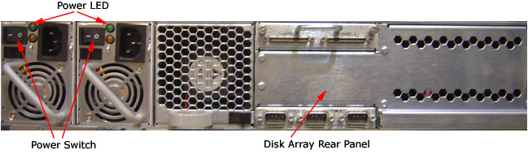
The 4.3.16 LightSpeed Xtream Console Operating System DVD (P/N 5154896) will be inserted into the Host Computer and via a script – it will be loaded to the V/DARC Node. If any problems arise, verify the correct media is installed or verify the Boot BIOS Order is correct. If V/DARC Node OS load problems continue, perform the V/DARC Stand-alone OS load procedure. This stand-alone procedure eliminates any external sources causing an issue but does not rule out media issues or internal V/DARC Node issues.
Open a Unix Shell and type the following:
{ctuser@hostname} su -<Enter>
Password: #bigguy <Enter>
[root@hostname] cd /usr/g/scripts <Enter>
[root@hostname] ./start_darcOS <Enter>
An Attention window appears:
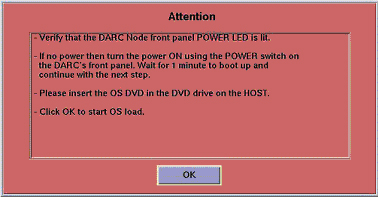
Follow the instructions in the Attention window:
Verify the V/DARC Node is turned ON
Insert the 4.3.16 LightSpeed Xtream Console Operating System DVD (P/N 5154896) into the Host Computer DVD-ROM drive
Select [OK] to begin.
An sh window displays the message below followed by a series of four rows of dots.
sh
Copy OS packages from the DVD to the HOST’s hard drive. Thistakes about 10 minutes.………………………………………………………………………….
………………………………………………………………………….
………………………………………………………………………….
………………………………………………………………………….
Once the copy process is complete the OS load begins:
sh
OS load has started. This takes about 18 minutes.
##.## % done.
| NOTE: | The VDARC OS Load will stop prematurely ONLY if an error is encountered. An Error Dialog Box will appear with a brief description of the error. Select [OK] after reading the instructions displayed on the Monitor. Refer to DARC OS Load Pop-Up Boxes for additional information on these error pop-up windows. Also, if any problems arise, verify the correct media is installed. |
| NOTE: | A %done status is displayed during the V/DARC OS load. This is only a timed countdown sequence and does not provide status of the actual load process. When the V/DARC OS load has completed a reboot message will appear. |
Once the load process is complete the DARC reboots:
Sh
Waiting for the DARC to boot up…
When the V/DARC OS load has completed, a pop-up Information box is displayed. An example is shown below.
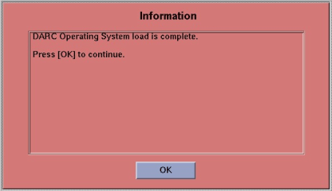
The OS disk will eject automatically. Remove the OS media from the Host Computer drive and close the drive.
Select [OK] .
To verify the OS has been loaded on the V/DARC Node, open a Unix Shell and type the following:
| NOTE: | If the VDARC login prompt [root@localhost root] is not present, then try reloading the V/DARC Node OS again per the procedure. Always be sure the V/DARC OS matches the Host OS already loaded. If issues persist perform the V/DARC Node Stand-alone Work Around OS Load Procedure. |
{ctuser@hostname} su -<Enter>
Password: #bigguy <Enter>
[root@hostname] rsh darc<Enter>
[root@localhost root] exit <Enter>
This completes the OS load for the V/DARC Node.
At the rear of the Disk Array (JBOD), locate the two (2) power switches. Press the two (2) power switches at rear panel to apply power to the Disk Array. Refer to Illustration 3
Illustration 3: Rear Panel of Disk Array
Open a Unix Shell and type the following:
[ctuser@hostname}su - <Enter>
Password:#bigguy <Enter>
[root@hostname]cd /usr/g/scripts<Enter>.
[root@hostname]./start_darc_load<Enter>.
A shell window pops up and the load begins. A SUCCESSFUL LOAD TAKES ~10 MINUTES. Continue the procedure when the load window goes away.
Close the shell (do not use for the next process).
Open a Unix Shell and type the following:
[ctuser@hostname}su - <Enter>
Password#bigguy <Enter>
[root@hostname]sync <Enter>
[root@hostname]sync <Enter>
[root@hostname]reboot <Enter>
A message appears: The system is going down for reboot NOW!
After approximately 4-5 minutes a pink pop up window appears with the message:
CT Software Auto-Start Disabled.
Select [OK] .
Open a Unix Shell and type the following:
{ctuser@hostname} su -<Enter>
Password: #bigguy
<Enter>
[root@hostname] rsh darc <Enter>
[root@darc] cd /usr/g/scripts <Enter>
[root@darc]] ls reconfigScanDisk <Enter>
reconfigScanDisk
[root@darc] rm reconfigScanDisk<Enter>
Type y to remove: y<Enter>
[root@darc] ls reconfigScanDisk <Enter>
reconfigScanDisk will be gone.
This is a required step for any site performing an LFC. This procedure flashes the VRAC(s) from the Host Computer with Application Software down.
Open a Unix Shell and type the following:
{ctuser@hostname}vrac_flash_update<Enter>
| NOTE: | This tool will check the FLASH versions of the VRAC on all IGs in the system. If any version is not up to date the VRAC will be updated at this time. APPLICATIONS MUST NOT BE RUNNING WHEN THIS STARTS. |
| NOTE: | If this FLASH procedure is interrupted reverify the V/DARC and V/IG Node rsh process is successful. Then rerun the vrac_flash_update procedure. |
Type: y
Verify vrac_flash_update was successful.
The following procedure should be performed ONLY IF you performed step 27d, inSection 3.2.3 (i.e., if your customer Ethernet Hospital Backbone begins with 172.16.0.xx.)
Open a Unix shell and type the following:
[ctuser@hostname}su -<Enter>
password: #bigguy<Enter>
[root@hostname]reconfig<Enter>
Select the [Network] button, check the Advanced Options box, then check the Change DARC Subnet? box and enter the following: 169.254.0.
Select [Accept] .
When the system prompts you to reboot, select [Yes] to reboot the system.
Open a Unix shell and type the following:
{ctuser@lhostname}st<Enter>
A Pink Pop Up Attention Message appears:
“OC initializing. Please wait…”.
| NOTE: | IG NODE NOT RESPONDING POP UP: The IG Node(s) may need to be power cycled. Possibly the VDARC Node was unable to actually bring up the IG Node or the IG Node did not respond due to a bad Ethernet cable or incorrect port connection. |
Select [OK] for other pink message boxes that appear throughout the reboot process.
If any Recon Selftest Failures are encountered review the error log. Make certain to note the errors for troubleshooting after the LFC.
This procedure restores Characterization Data, Calibration Data, Protocols, etc., from your System State DVD.
Insert the Save System State DVD-RAM into DVD-RAM SCSI Tower drive.
Wait until the DVD drive is ready (i.e., until the front panel green LED is no longer lit).
Select: Service icon to access the CSD (Common Service Desktop).
Select: [Utilities] .
Select: [System State] .
Select [All] . This will highlight the protocols, calibration, characterization, etc.

Select [Restore] .
| NOTE: | This will not affect any IP addresses (e.g., DARC Subnet) that were previously modified. |
If applicable, select [Yes] when a pop-up appears to restore System State.
Verify the CSA Protocols (reformat, Volume Viewer, etc.) were restored correctly.
When completed, select [CANCEL] .
Select [DISMISS] .
Close the Service Desktop window.
| NOTE: | New tasks are included in this SW release. These tasks will generate data that needs to be saved to the System State DVD. Follow the save and restore procedures throughout this document precisely or valuable information may be lost. |
Insert the System State DVD-RAM into the SCSI Tower DVD RAM drive.
Wait until the DVD drive is ready (i.e., until the front panel green LED is no longer lit).
Select: Service icon to access the CSD (Common Service Desktop)..
Select: [Utilities] .
Select: [System State] .
Select [All] to select all the cals, characterizations, etc.
Select [Save] .
If applicable, select [Yes] when the following message appears: System State Media Status: Please insert a DVD into the drive and press Save again.
| NOTE: | Verify that the "Save" of System State was successful.
If not, correct any errors and re-save the system state. A message
at the end of the Save should state: Save/Restore System
State: Completed Successfully. |
When completed, select [CANCEL] .
When completed, select [Dismiss] .
Close the Service Desktop window at the upper left corner of the screen.
The Reconstruction (not Scan) portion of the system can be tested at this point.
Verify Recon is not Shutdown or Paused (in the Left Display Monitor's FSA Box). Select [Recon Management] then [Restart Queue] , if not in the Idle Mode.
Select [Retro Recon] on the left Monitor.
Select the gold rat Patient ID.
Select [Select Series] .
Select [Confirm] .
Verify the image(s) reconstruct and are displayed.
Verify the Left Monitor’s FSA Box displays successfully.
Select [Quit] .
Select the [Service] Icon.
Select [Diagnostics] .
Under Image Chain, select [Recon Data Path] .
Select [Recon Data Path] .
Verify it is set to [1] and [ALL] .
Select [Run] .
Verify Recon Data Path tests pass.
Select [Dismiss] or close the GUI.
| Power MUST be removed from the GTCB during the initial run of
the flash download. Removing power protects the GTCB from a catastrophic
GTCB failure. Intermittent GTCB board failures during the Flash Download process were identified as Flash Download timing issues between the DCB and GTCB (TCB). Power OFF the GTCB to eliminate this Flash download timing issue between the DCB and GTCB. | |
Power OFF the GTCB by pressing the Emergency Off button. Use one of the two Emergency Off buttons found on the Gantry front cover.
Select the Service Icon.
Select [Utilities] .
Select [Install] .
Select [FLASH Download Tool] .
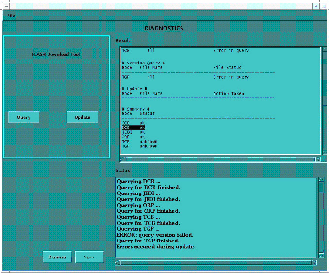
Verify the GTCB is powered OFF. Verify the small green Gantry Reset LED is still blinking on the Gantry Control.
| NOTE: | The Gantry Reset LED indicates the Emergency Stop circuit status. When the E-Stop circuit is pressed, all power is removed from the GT/VT - 2000/1700 Table. Another indication of the Emergency Stop circuit status is the orange Drives Reset LED blinking on the Service Switch Panel. |
Select [Update] .
Verify the GTCB is powered OFF. This is achieved by pressing the Emergency Stop button on the front Gantry Covers. Verify power is removed from the GTCB by checking that the small Gantry Reset LED is still blinking on the Gantry Control.
| NOTE: | Ignore any TGP “unknown” messaging. This is not a problem. |
Turn GTCB power back ON ONLY after the DCB/CCB/Jedi/ORP has successfully flashed. GTCB power is restored via the Gantry Control reset button or the Drives Reset switch on the Service Switch Panel.
| NOTE: | Ignore any TGP “unknown” messaging. This is not a problem. |
Once the DCB/CCB/Jedi/ORP flash successfully:
Select [Update] .
Verify the GTCB is powered ON at this time.
Select [Dismiss] when then Flash Download process is a success.
If there are any issues with the FLASH Download Tool update, open a Unix Shell and try to ping the following (<Ctrl+C> and close the shell when done pinging each one).
ping orp
ping tgp
| NOTE: | If an issue exists with Flash Download, retry, then perform SYSTEM RESETS, SCAN, RUN and verify this passes, and view the log for errors. |
| NOTE: | Flash Download may take several times before it is successful. GTCB board failures during a Flash Download were identified as timing issues between the DCB Flash and the GTCB (TCB) Flash. Powering OFF the GTCB eliminates this Flash timing issue between the DCB and GTCB. |
Insert the Options DVD-RAM in the SCSI Tower DVD RAM drive.
| NOTE: | If you do not have the Options DVD-RAM, then you can use the eLicense feature. Follow this link to the eLicense Page: http://egems.gehealthcare.com/elicense/index.jsp |
With the Applications up, select the Service Icon.
Select [Configuration] .
Select [Install Options] .

Select [Install] .
Select [Permanent] .

Select the [MEDIA] button and insert the Options DVD.

Select [OK] . Software options available for installation are displayed on the options screen.
Select options one at a time from the Available Options List and select [Install] to update each selection and place it on the Installed Options List.
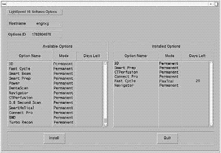
Select [Quit] to exit the window when the process is complete.
Select [Quit] again to exit Install Options window.
A window pops-up displaying: “Application should be shutdown and restarted for installed/removed options to take effect.”
Select [OK] .
Press the button on the DVD-RAM drive on SCSI Tower to eject the option DVD.
Close the Service Desktop window in the upper left corner of the screen.
Do not remove the DVD-RAM from the SCSI Tower DVD-RAM drive.
Verify on Common Service Desktop (CSD) the number of Exams. If it does not match what was recorded earlier, then contact the OLC for directions to fix Tube Usage.
For the initial M4 Load, this step is critical to VCT Tube Warranty. 6000 Exams or 12 months.
If HIPAA is turned ON, then configure it now. (Refer to HIPAA Configuration) When HIPAA configuration is complete, return to this procedure.
If your customer wishes to have Product Network Filters (PNF) configured, then proceed to Configure Product Network Filters now. When PNF configuration is complete, return to this procedure.
If requested by the customer, configure AW Direct Connect, now. When configuration is complete, return to this procedure.
Plug the Hospital Network (HSP) Cable into the Operator Console's rear bulkhead as shown.
Select the red Shutdown Icon.
An attention box will appear as shown below:
Select: [Restart] and then the [OK] button to shutdown and restart the system.
If HIPAA Present was SET TO ON--Admin Screen:
When the system comes up the following screen will be displayed if ‘HIPAA Present’ was set to On during the Application LOAD process. The admin screen requires a password and OK:
Operation: Login
Username: service
Password: 4rhelp
Select [OK] .
|
(For Scanners with GE Tubes)
A GE Field Engineer
(FE) is required On-Site within 30 days, to perform the verification
portion of this procedure. This verification cannot be done by non-GE
employees. If a GE Service employee is not currently on site, please
contact your GE Healthcare representative to arrange a visit. This section is absolutely critical to perform. Failure to do so will result in nuisance pop-ups to the user, and tube performance may decrease. | |
If the tube in your system has a ’Tube ID’ board, the software automatically selects the tube identity, and sets it to ‘GE Performix Tube’. There is no action needed. For all other systems or if the software does not automatically select the tub identity, follow the procedure shown below.
| NOTE: | Do not “double click” the Tube Certification Tool. This will cause more than one tool window to be displayed, one with message service key information not available. If this happens, close window and try again. If this happens more than once, reboot system and try again. |
Illustration 4: Selection of Tube Identity

| NOTE: | Possible Pop Up messages at start up:
|
Please refer to Tube Install Certification Tool - Screens for examples of the screens displayed by the Tube Install Certification Tool.
Successfully perform a Scout scan.
Successfully perform a Helical scan.
Successfully perform an Axial scan.
| NOTE: | 1) After loading Class C & Class M Software,
perform a Save System State. 2) After loading Class C & Class M Software disable Telnet via PNF. |
Load Process is now complete.
Remove the System State DVD-RAM from the SCSI Tower.
Verify V/DARC Troubleshooting Cable is not connected to Scan or Display Monitors.
Replace the front and rear Operator Console covers.